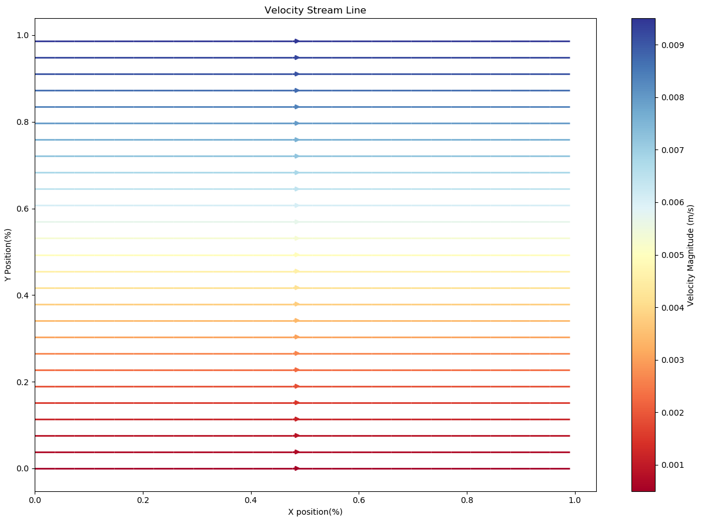
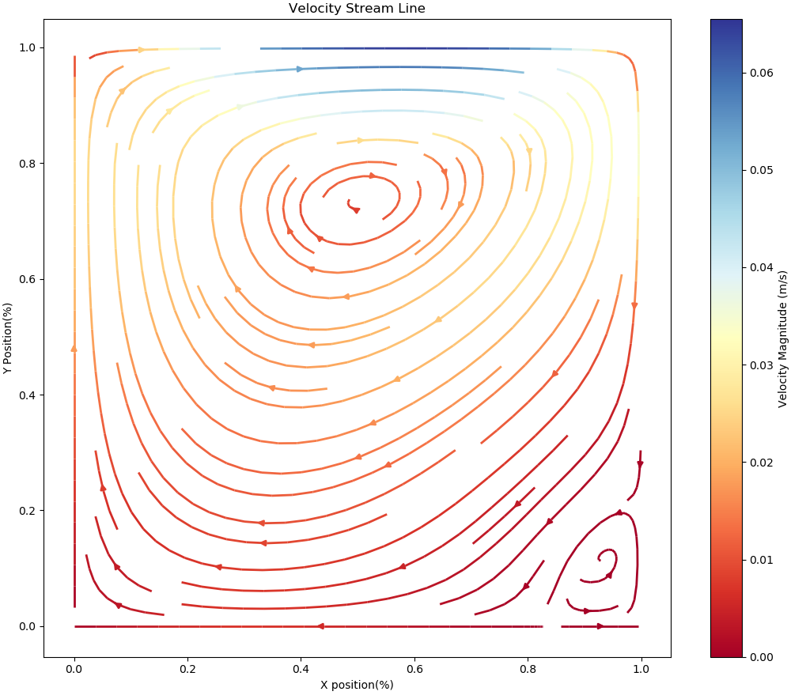
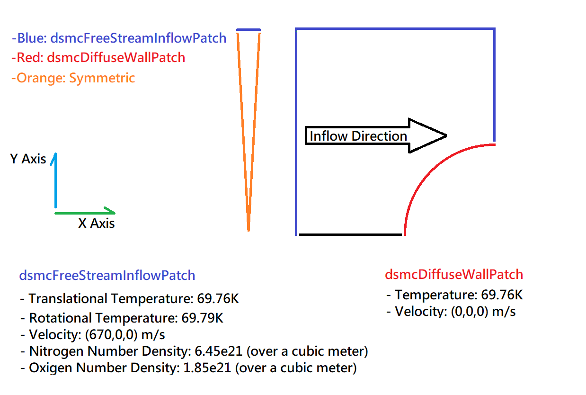
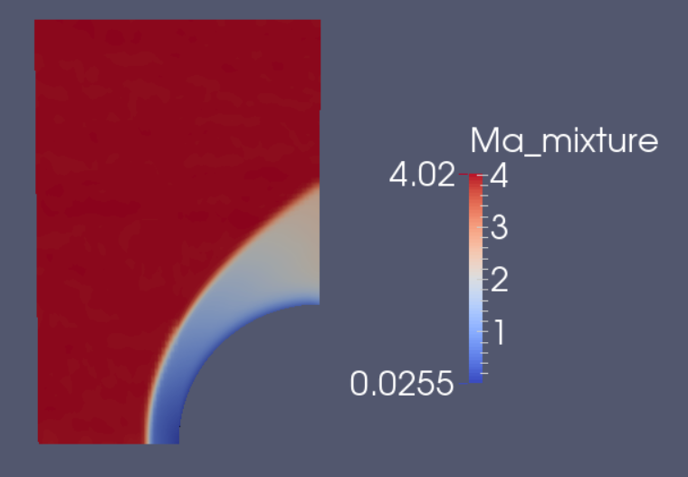
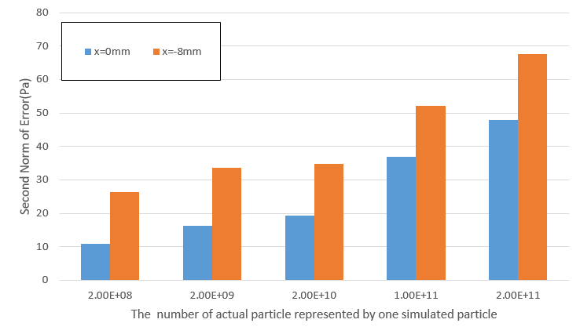
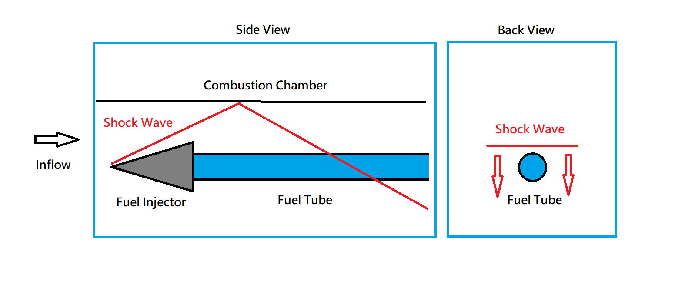

Computational Fluid Dynamic Projects
Course Project:
SIMPLER Algorithm
Course Requirement
We need to understand the pressure correction method and apply one of the schemes(of Pressure Correction method) on 2 problems:- Couette Flow
- Lid-Driven Cavity Flow
Project Goal
I decide to replicate the scheme proposed by Suhas Patankar in his book "Numerical Heat Transfer and Fluid Flow" Chapt. 5~6. Also, I hope to design a set of functions that solve both flow fields with different configuration.Project Result
The stream line for the simulated Couette flow

The stream line for the simulated Cavity flow
Links
Final Report on HackMDProject Code
DSMCFoam Validation Test
Abstract
The purpose of this project is to understand how simulated particle numbers affected the correctness of DSMCFoam. I evaluate the correctness by comparing the simulation data with experiments made by MARHy in CNRS, and plot the variation of correctness when I decreased the particle numbers.Project Result
The boundary condition set up for the DSMC simulation

The Mach number contour over the flow field

The variation of Error Second Norm when decreasing the simulation number. The orange and blue data bar represent data in different X position.
Links
Project Report in ChineseShock Wave Impact on Hydrogen Fuel Tube
Abstract
The project goal is to study how shock wave-fuel interaction affects combustion. Considering fuel flowing behind the fuel injector, the cylindrical "fuel tube" will go through reflected shock wave. If we see this scene from behind and along with the fuel moving backward, the same thing can be seen as a shock wave swipe through a 2D fuel bubble, as shown in the following picture.
In Back View part of the picture, we can see a 2D shock wave front(Red Line) is passing through a 2D fuel tube.
Simulation

This is the simulation when the shock wave is passing through 2D fuel bubble. We can see the variation of the gas mixture density over time. Reaction simulation is not included in this animation.